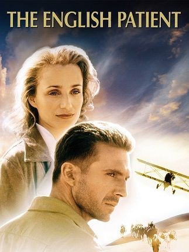

Obsada:
Ralph Fiennes jako hrabia László de Almásy
Kristin Scott Thomas jako Katharine Clifton
Juliette Binoche jako Hana
Willem Dafoe jako David Caravaggio
Naveen Andrews jako Kip
Colin Firth jako Geoffrey Clifton
Julian Wadham jako Madox
Jürgen Prochnow jako major Muller
Kevin Whately jako sierżant Hardy
Clive Merrison jako Fenelon-Barnes
Nino Castelnuovo jako D’Agostino
Hichem Rostom jako Fouad
Peter Rühring jako Bermann
Nagrody
Oscary 1997:
najlepszy film (Saul Zaentz)
najlepsza aktorka drugoplanowa (Juliette Binoche)
najlepszy reżyser (Anthony Minghella)
najlepsza muzyka oryginalna do dramatu (Gabriel Yared)
najlepsza scenografia (Stephenie McMillan, Stuart Craig)
najlepsze kostiumy (Ann Roth)
najlepsze zdjęcia (John Seale)
najlepszy dźwięk (Christopher Newman, David Parker, Mark Berger, Walter Murch)
najlepszy montaż (Walter Murch)
Złote Globy 1997:
najlepszy dramat
najlepsza muzyka (Gabriel Yared)
Berlinale 1997:
najlepsza aktorka (Juliette Binoche)
BAFTA 1997:
najlepszy film (Anthony Minghella, Saul Zaentz)
nagroda im. Anthony’ego Asquitha za najlepszą muzykę filmową (Gabriel Yared)
najlepsza aktorka drugoplanowa (Juliette Binoche)
najlepsze zdjęcia (John Seale)
najlepszy montaż (Walter Murch)
najlepszy scenariusz adaptowany (Anthony Minghella)
Europejska Akademia Filmowa 1997:
najlepsza europejska aktorka roku (Juliette Binoche)
najlepszy europejski operator roku (John Seale)
Grammy 1998:
najlepsza kompozycja instrumentalna napisana dla filmu kinowego lub na potrzeby telewizji (Gabriel Yared)
Amerykańska Gildia Producentów Filmowych 1997:
najlepszy producent (Saul Zaentz)
nagroda Kodak Vision honorująca wyobraźnię oraz osiągnięcia artystyczne - kinowa
Amerykańska Gildia Reżyserów Filmowych 1997:
najlepsze osiągnięcie reżyserskie w filmie fabularnym (Anthony Minghella)
Amerykańska Gildia Scenografów 1997:
najlepsza scenografia w filmie (Aurelio Crugnola, Stuart Craig)
Amerykańskie Stowarzyszenie Montażystów 1997:
najlepszy montaż filmu fabularnego (Walter Murch)
Amerykańskie Stowarzyszenie Operatorów Filmowych 1997:
najlepsze zdjęcia do filmu fabularnego (John Seale)
Bostońskie Stowarzyszenie Krytyków Filmowych 1997:
najlepsze zdjęcia (John Seale)
Satelity 1997:
najlepsza muzyka (Gabriel Yared)
najlepsze zdjęcia (John Seale)
najlepszy scenariusz adaptowany (Anthony Minghella)
Stowarzyszenie Krytyków Filmowych z Los Angeles 1996:
najlepsze zdjęcia (John Seale)